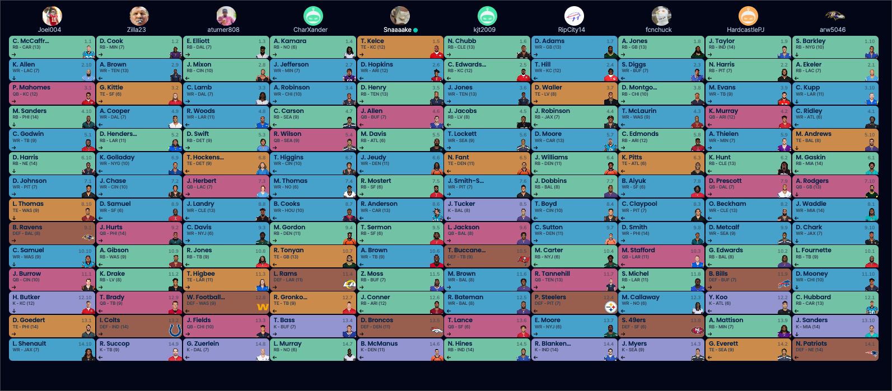

-> 🔗 Keeper Rules <–
Right here ^
2021-2022 Draft & Keepers
Jake - Derrick Henry - 3rd (2nd-year keep) PJ - DK Metcalf - 9th (2nd-year keep) Kris - Lamar Jackson - 9th (2nd year?) Ian - Terry McLaurin - 4th CJ - Bradin Cooks - 8th Seif - Antonio Gibson - 10th Joel - Dionte Johnson - 7th Neil - JK Dobbins - 7th Andy - D’Andre Swift - 5th Tony - Calvin Ridley - 4th

@Pangy, here’s your inherited team, with the round they were picked in because ILU
QB - Stafford - 10th QB - Burrow - 11th RB - A Jones - 1st RB - Montgomery - 3rd RB - Mitchell - Waivers RB - Patterson - Waivers RB - C. Hubbard - 12th WR - Mike Williams - Waivers WR - McLaurin (4th round keeper) WR - Mooney - 11th TE - Waller - 3rd TE - Gesicki - Waivers D - 49ers - 13th K - Prater - Waivers